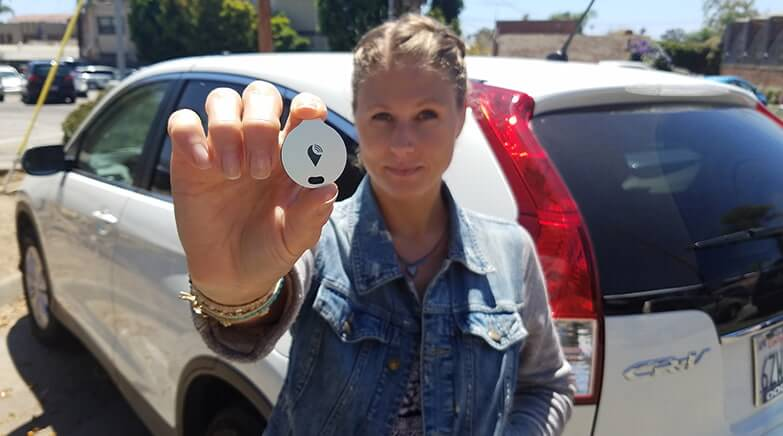
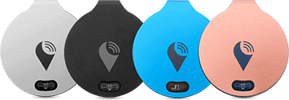
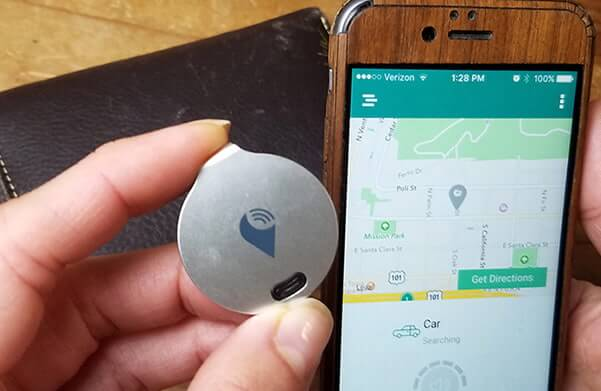

Tiny Device Allows You To Track Your Vehicle Using Your Smartphone
September 19, 2016 at 11:49 am EDT | Sponsored by Trackr
With Over 2.5 Million Units Sold Worldwide, This is The Most Affordable Solution to Find Your Lost Items!
Have you ever lost your car on a parking lot? It happens. You park and go shopping. When you get back, you don't have a clue where your car is. Then you start roaming around clicking on the panic button on your car keys so the alarm goes off. It can be frustrating, especially on a hot, sunny day.
No, you don't need to install an expensive GPS system to keep track of your car. That's way too expensive. You would need to pay a monthly subscription fee just to use it. Don't we have enough bills to pay already?
But is there a way to track your vehicle without spending a fortune? Yes, now there is!
A California-based startup company was able to make this a reality. They created a tiny device that works with your smartphone, and it could be exactly what you're looking for!
What is it?
It's calledTrackR. It is a state-of-the-art tracking device the size of a quarter. It's changing the way we keep track of the important things in our lives.
How Does it Work?
It's easy! Install the free TrackR app on your smartphone, connect the app to your device and you're ready to go! Simply attach TrackR to whatever you want to keep tabs on. The entire process of setting it up only takes 5 minutes or less.
You can attach it to your keys, briefcase, wallet, your latest tech gadgets and anything else you don't want to lose. Then use the TrackR app to locate your missing item in seconds.
"This device has saved me tons of time and money!"
Forget expensive GPS systems or tracking services. Nobody wants to pay expensive monthly subscription fees. We understand how stressful these things can be, and this is the reason why TrackR was created. This device is your VIP when you need to take care of more important things in life.
Remember the car scenario above? If you have the TrackR, you can just hide it under your car's floor mat, in the trunk or in the glove compartment. Somewhere it won't be found if your car gets stolen.
If you forget where you parked your car, whip out your smartphone and open the TrackR app. Tap on the "lost item" icon on the screen and the app will tell you the exact coordinates of the last known location of the TrackR.
With TrackR you'll gain peace of mind, knowing you can find your car quickly.
Watch The Video Below To See How TrackR Works...
How Much is it Going To Cost Me?
You're probably thinking that this device is very expensive... False! TrackR only costs $29! That's a small price to pay for peace of mind, isn't it?
Where can I buy one?
You can buy it directly from the company's website by clicking here.
What else can I do with TrackR?
As we said before, TrackR has unlimited possibilities. The device is small and unobtrusive enough that you can attach it to your pet. Put it on their collar, and the issue of searching for them as they scamper off to nearby places will be over! Attach it to your keys and wallet, and never waste a minute rummaging the whole house for it.
TrackR even comes with a double-sided adhesive so you can stick it to your laptop or under your bike seat. Track down and punish the thieves who steal your expensive things!
Attach it To Everything That's Important To You...
Now that you've been informed about this brilliant invention, let me show you how easy it is to track your valuable items. All you need to do is to follow these 3 steps:
Step 1: Order TrackR today to take advantage of the 50% OFF sale.
Step 2: When you receive it, open the package and place the thin battery inside the device. Then download the free TrackR app on your smartphone and link up the unit with the app. Finally, hide TrackR in your car or attach it to the item you wish to track.
Step 3: Relax... Use the TrackR app to find your things. It's easy!
Here's a tip: TrackR is a great gift idea because there's no monthly fee involved!
This way you and your loved ones can keep track of everything. Keys, car, wallet, bike, toys, pets and even electronics such as a laptop, iPad or Kindle!"